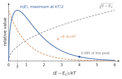
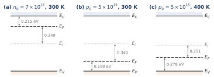
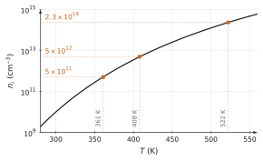
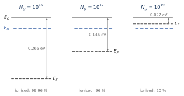

Bands and gap; the Fermi–Dirac function and its Boltzmann limit; effective mass and density of states gC(E)∝E−EC; n0=NCe−(EC−EF)/kT, p0=NVe−(EF−EV)/kT with NC,V=2(2πm∗kT/h2)3/2; ni=NCNVe−Eg/2kT and the intrinsic level Ei; n0=nie(EF−Ei)/kT; ionised donors ND+=ND/[1+2e(EF−ED)/kT]; the position of EF in doped material.
Data
Silicon: Eg=1.12 eV (held constant with T), NC=2.8×1019, NV=1.04×1019cm−3 at 300 K, both ∝T3/2; ni=1010cm−3 at 300 K and ni(T)=1010(T/300)3/2exp[−2kEg(T1−3001)]cm−3; k=8.617×10−5 eV/K; donor and acceptor levels 45 meV from their band edge.
Problem 3.1Where are the conduction electrons?B · Guided calculation
Adapted from Neamen, Problems 4.6 and 4.7, p. 150
In the Boltzmann limit, the number of electrons per unit energy in the conduction band is n(E)=gC(E)f(E)∝E−ECe−(E−EF)/kT.
Sketch E−EC, e−(E−EF)/kT and their product above EC. Explain why the product vanishes at EC and at high energy.
Show that n(E) is largest at E=EC+kT/2. Give this energy at 300 K.
Compute the ratio n(EC+4kT)/n(EC+kT/2). What does it say about the energies of the conduction electrons?
Without calculation, where is the maximum of the hole distribution gV(E)[1−f(E)]?
(a) The density of states starts at zero at EC and grows as E−EC; the occupation decreases exponentially. Near EC there are few states; far above, the states are almost empty. The product is a skewed bell, zero at EC, with a long exponential tail.
(b) With u=(E−EC)/kT, n∝ue−u (the factor e−(EC−EF)/kT is a constant). Its derivative, e−u(1/(2u)−u), vanishes at u=1/2: E=EC+kT/2=EC+13 meV at 300 K.
(d) By symmetry of the argument, the hole distribution peaks at kT/2 below EV.
The conduction electrons sit within a few kT of the band edge: a few hundredths of an electronvolt, compared with a gap of 1.12 eV. This is why a band can be described by its edge and an effective mass, and why only the edges appear in the formulas for n0 and p0.

The number of electrons per unit energy is the product of a rising density of states and a falling occupation.
Problem 3.2Effective masses from the densities of statesB · Guided calculation
Adapted from Sze & Lee, Ch. 1, Problem 9, p. 41
The effective density of states is NV=2(h22πmp∗kT)3/2, and similarly for NC with mn∗.
Explain why NV can be read as ‘the number of states per cm³ that would be needed at the single energy EV to hold all the holes’.
From NV=1.04×1019cm−3 and NC=2.8×1019cm−3 at 300 K, compute mp∗ and mn∗ for silicon in units of m0.
From NV=7.0×1018cm−3 for GaAs, compute mp∗. The table of the course gives mp∗=0.48m0 for GaAs: what value of NV does this mass give? Comment.
Hint
Work in SI units: N in m−3, then m∗=2πkTh2(2N)2/3.
(a) In the Boltzmann limit p0=NVe−(EF−EV)/kT: this is the number of holes that NV states placed all at EV would hold, each with the occupation by a hole e−(EF−EV)/kT. NV is the real distribution of states, weighted by the occupation and integrated, gathered at the band edge.
(b) h2/(2πkT)=(6.626×10−34)2/(2π×1.381×10−23×300)=1.69×10−46 kg·m². For NV=1.04×1025 m−3, (NV/2)2/3=(5.2×1024)2/3=3.00×1016 m−2, so mp∗=5.07×10−31 kg =0.56m0. The same steps with NC give mn∗=1.08m0. These are the density-of-states masses of the course table.
(c) NV=7.0×1024 m−3 gives mp∗=0.43m0. Conversely NV∝m∗3/2, so 0.48m0 gives 7.0×1018×(0.48/0.43)3/2=8.4×1018cm−3. Tables of material constants gather values measured by different methods and rounded; they are not always exactly consistent with each other. The difference here (20 % on NV) changes ni by 10 % only, because ni∝NCNV.
Problem 3.3Placing the Fermi levelB · Guided calculation
Adapted from Neamen, Problems 4.17, 4.24 and 4.25, pp. 150–151
Silicon at 300 K is doped with arsenic so that n0=7×1015cm−3. Find EC−EF, EF−EV, p0 and EF−Ei. Which carrier is the minority carrier?
Silicon at 300 K is doped with boron so that p0=5×1015cm−3. Find EF−EV, EC−EF, n0 and Ei−EF.
The sample of (b) is heated to 400 K; p0 stays 5×1015cm−3. Compute NV and ni at 400 K, then EF−EV, n0 and Ei−EF. Does the Fermi level move towards or away from Ei? Why?
Hint
Use EC−EF=kTln(NC/n0) and EF−Ei=kTln(n0/ni), and the same forms for holes; kT=34.5 meV at 400 K.
(c) NV(400)=1.04×1019×(4/3)3/2=1.60×1019cm−3; ni(400)=1010×1.540×exp[−2×8.617×10−51.12(4001−3001)]=3.5×1012cm−3. Then EF−EV=0.0345ln(1.60×1019/5×1015)=0.278 eV, n0=ni2/p0=2.4×109cm−3, and Ei−EF=0.0345ln(5×1015/3.5×1012)=0.251 eV. The Fermi level moves towardsEi (0.251 instead of 0.340 eV), although p0 is the same. At the higher temperature the band edges have more accessible states (NV larger) and the thermal pairs are more numerous (ni larger): the same number of holes is a smaller departure from the intrinsic material, so EF sits closer to Ei. At still higher temperature, when ni approaches NA, it reaches Ei.

The Fermi level in the three samples, to scale. At 400 K the larger ni brings EF closer to Ei.
Problem 3.4Doping for a given Fermi levelB · Guided calculation
Adapted from Sze & Lee, Ch. 1, Problem 14, p. 42
A silicon sample at 300 K contains NA=1016cm−3 acceptors. Donors are added so that the material becomes n-type with EF 0.20 eV below EC.
What electron density does this position of EF correspond to?
Using neutrality with complete ionisation, find the required ND.
Check that the donors are indeed fully ionised at this Fermi level (EC−ED=45 meV).
Hint
The added donors must first compensate the acceptors.
(b) Neutrality: n0+NA=p0+ND, with p0=ni2/n0≈8×103cm−3 negligible: ND=n0+NA=2.24×1016cm−3.
(c) EF−ED=(EC−ED)−(EC−EF)=0.045−0.20=−0.155 eV, so ND+/ND=1/(1+2e−0.155/0.0259)=1/(1+2×2.5×10−3)=0.995. The Fermi level is six kT below the donor level: the donors are empty of their electron, i.e. ionised, as assumed.
Problem 3.5A small difference of gap, a large difference of niB · Guided calculation
Adapted from Neamen, Problem 4.5, p. 150
Two semiconductors A and B have identical properties except their gaps: 0.90 eV for A and 1.10 eV for B.
Show that niB/niA=exp[−(EgB−EgA)/2kT].
Evaluate the ratio at 200, 300 and 400 K.
Explain physically why the ratio approaches 1 when the temperature rises.
Show the short answer
(b) 3.0×10−3, 2.1×10−2, 5.5×10−2.
Show the correction
(a) ni=NCNVe−Eg/2kT; with the same NC and NV, the ratio is e−(EgB−EgA)/2kT=e−0.1/kT.
(b) kT=17.2, 25.9 and 34.5 meV: ratios e−5.80=3.0×10−3, e−3.86=2.1×10−2 and e−2.90=5.5×10−2.
(c) The ratio depends on ΔEg/kT. A difference of 0.2 eV in the gap is eight kT at 300 K, so it changes the probability of breaking a bond (of lifting an electron across the gap) by a large factor; as kT grows, the same 0.2 eV is a smaller number of kT and matters less. This exponential sensitivity is why silicon and GaAs, whose gaps differ by 0.3 eV, have intrinsic densities that differ by four orders of magnitude.
Problem 3.6How hot can a device run?B · Guided calculation
Adapted from Neamen, Problems 4.3 and 4.50, pp. 149 and 153
Use the expression of ni(T) given in the data, with Eg constant.
A silicon device works properly only if ni≤5×1011cm−3. Find the maximum temperature, by trial. Repeat for 5×1012cm−3.
A device is doped with ND=1015cm−3. It requires that thermal pairs contribute no more than 5 % of the electron density, i.e. n0≤1.05ND. Show that this means p0≤0.05ND, and deduce the maximum value of ni, then the maximum temperature.
At that temperature, compute EC−EF and EF−Ei, and compare with 300 K. Is the Fermi level closer to or further from the intrinsic level?
Hint
In (b), neutrality gives n0−p0=ND, so n0=1.05ND means p0=0.05ND, and ni2=n0p0.
Show the short answer
(a) 361 K and 408 K; (b) ni≤2.3×1014cm−3, Tmax≈522 K; (c) EC−EF: 0.265 eV at 300 K, 0.496 eV at 522 K; EF−Ei: 0.298 and 0.068 eV, closer.
Show the correction
(a) ni(T) grows by about a factor 10 every 25 to 30 K near 350 K. Trials: ni(350)=2.8×1011, ni(360)=4.9×1011, ni(362)=5.4×1011: Tmax≈361 K (88 °C). For 5×1012cm−3: ni(408)=5×1012, Tmax≈408 K.
(b) Neutrality with all donors ionised: n0=ND+p0. Then n0≤1.05ND means p0≤0.05ND=5×1013cm−3, and ni2=n0p0≤1.05×1015×5×1013=5.25×1028, so ni≤2.3×1014cm−3. Trials give Tmax≈522 K (about 250 °C).
(c) At 300 K: EC−EF=0.0259ln(2.8×1019/1015)=0.265 eV and EF−Ei=0.0259ln(105)=0.298 eV. At 522 K: kT=0.0450 eV, NC=2.8×1019×(522/300)3/2=6.4×1019cm−3, EC−EF=0.0450ln(6.4×1019/1.05×1015)=0.496 eV, and EF−Ei=0.0450ln(1.05×1015/2.3×1014)=0.068 eV. The Fermi level is much closer to Ei: the sample is near the end of its extrinsic range. The more lightly doped a device, the lower its maximum temperature; the gap sets the scale.

The intrinsic density of silicon versus temperature, and the three limits of the problem.
Problem 3.7Is complete ionisation justified?B · Guided calculation
Adapted from Sze & Lee, Ch. 1, Problem 20, p. 42
Silicon at 300 K is doped with phosphorus (EC−ED=45 meV) at ND=1015, 1017 and 1019cm−3.
Assuming complete ionisation, compute EC−EF for each doping.
With this EF, compute ND+/ND=1/[1+2e(EF−ED)/kT]. For which dopings is the assumption justified?
For the highest doping, what goes wrong besides incomplete ionisation? Which assumption of the formula n0=NCe−(EC−EF)/kT fails?
Show the short answer
(a) 0.265, 0.146, 0.027 eV; (b) 0.9996, 0.96, 0.20: justified for 1015, acceptable for 1017, not for 1019; (c) EF is within kT of EC: the Boltzmann approximation fails.
(b) EF−ED=0.045−(EC−EF): −0.220, −0.101 and +0.018 eV. Then ND+/ND=1/(1+2e−8.50)=0.9996, 1/(1+2e−3.90)=0.96, and 1/(1+2e+0.71)=0.20. Complete ionisation is excellent at 1015, acceptable (4 % error) at 1017, and completely wrong at 1019cm−3: the result contradicts the assumption. A self-consistent calculation would solve neutrality n0=ND+ for EF (see the chapter).
(c) At 1019cm−3 the Fermi level is about kT below EC: the occupation of the conduction states is no longer small, and the Boltzmann form of Fermi–Dirac, on which n0=NCe−(EC−EF)/kT rests, is no longer valid. The material is close to degenerate. (At such dopings the donor levels also merge into a band, which the hydrogen-like model ignores.)

The top of the gap, to scale. When EF comes close to or above ED, the donors keep their electrons.
Problem 3.8A one-dimensional metal, and counting bandsB · Guided calculation
From the course notes, Chapter 3
(i) A chain of atoms spaced by a=0.25 nm, one electron per atom. Find kF, EF, and the fraction of the Brillouin zone that is filled. (ii) A crystal of germanium has N primitive cells of 2 atoms. How many valence electrons, how many states per band, how many full bands at 0 K?
Show the short answer
(i) kF=π/2a=6.28×109 m−1; EF=ℏ2kF2/2m=1.50eV; half of the zone. (ii) 4×2×N=8N electrons; 2N states per band; 4 full bands.
Problem 3.9Gap criterionB · Guided calculation
From the course notes, Chapter 3
Compute Eg/kT at 300 K for C, Si, Ge and GaAs (Table 3.2) and classify them with the criterion Eg<100kT / Eg>200kT. Above which temperature would diamond satisfy Eg<100kT?
Show the short answer
Eg/kT: C 212, Si 43, Ge 25, GaAs 55: Si, Ge, GaAs are semiconductors, diamond an insulator. Eg<100kT for diamond needs T>5.48/(100×8.617×10−5)≈640 K (gap held constant).
Problem 3.10Fermi–DiracB · Guided calculation
From the course notes, Chapter 3
Find the probability that a state 0.1 eV above EF is occupied at 300 K and at 600 K. What is the probability that a state 0.1 eV below EF is empty? By how much does the Boltzmann approximation overestimate the occupation at EF+3kT?
Show the short answer
Above: 1/(1+e0.1/0.0259)=0.020 at 300 K and 1/(1+e0.1/0.0517)=0.126 at 600 K. Below, the probability of being empty is 1−f=f(EF+0.1)=0.020 at 300 K (symmetry of the Fermi function). At 3kT: e−3=0.0498 against 1/(1+e3)=0.0474, 5 % too high.
Problem 3.11Effective densities of statesB · Guided calculation
From the course notes, Chapter 3
From (3.16) compute NC and NV of silicon at 300 K with mn∗=1.08m0 and mp∗=0.56m0. What are they at 77 K and at 600 K?
Show the short answer
NC=2.8×1019cm−3, NV=1.05×1019cm−3 at 300 K. At 77 K, factor (77/300)3/2=0.130: 3.6×1018 and 1.4×1018. At 600 K, factor 2.83: 7.9×1019 and 2.9×1019cm−3.
Problem 3.12Intrinsic concentration and intrinsic levelB · Guided calculation
From the course notes, Chapter 3
From Table 3.3 compute ni of germanium and of gallium arsenide at 300 K and compare with the tabulated values. Compute the position of Ei with respect to midgap for Ge and GaAs from NC and NV. On which side of midgap is it, and why?
Show the short answer
Ge: 1.04×1019×6.0×1018e−0.66/(2×0.0259)=7.9×1018×2.9×10−6=2.3×1013 (tabulated 2.4×1013). GaAs: 1.8×1018×1.25×10−12=2.3×106 (tabulated 1.8×106; ni is very sensitive to the exact gap). Ei−Emid=(kT/2)ln(NV/NC): Ge 0.01295ln(6.0/10.4)=−7.1meV (below midgap, because NV<NC); GaAs 0.01295ln(7.0×1018/4.7×1017)=+35meV (above midgap, because mn∗ is small, so NC is small).
Problem 3.13TemperatureB · Guided calculation
From the course notes, Chapter 3
By what factor does ni of silicon rise from 300 to 350 K (Eg held at 1.12 eV)? By what factor does the resistivity of the pure material fall if the mobility varies as T−3/2?
Show the short answer
ni is multiplied by (350/300)3/2exp[(Eg/2k)(1/300−1/350)]=1.26×22.1=27.8. With μ∝T−3/2, μ falls by 1.26, so σ rises by 27.8/1.26=22 and ρ falls by 22.
Problem 3.14A donor; p-type samplesB · Guided calculation
From the course notes, Chapter 3
(i) For ND=1016cm−3 in silicon at 300 K, the Fermi level is 0.206 eV below EC and ED is 45 meV below EC. Compute ND+/ND. Find the position of EF with respect to ED for which half the donors are ionised. (ii) Silicon doped with NA=2×1016cm−3: find p0, n0, Ei−EF and EF−EV; is the nondegenerate assumption satisfied? (iii) Germanium doped with NA=1017cm−3: find p0 and n0.
Show the short answer
(i) EF−ED=−(0.206−0.045)=−0.161eV; 2e−0.161/0.0259=2×2.0×10−3=4.0×10−3; ND+/ND=1/1.004=0.996. Half ionised: 2e(EF−ED)/kT=1, so EF=ED−kTln2: EF is kTln2=18meV below the donor level. (ii) p0=2×1016; n0=ni2/p0=5×103cm−3; Ei−EF=0.0259ln(2×106)=0.376eV; EF−EV=kTln(NV/NA)=0.162eV, which is 6.3kT: nondegenerate. (iii) p0=1017, n0=(2.4×1013)2/1017=5.8×109cm−3.
Problem 3.15Temperature windowB · Guided calculation
From the course notes, Chapter 3
Take ni(T)=1010(T/300)3/2exp[−2kEg(T1−3001)]cm−3 with Eg=1.12eV and k=8.617×10−5 eV/K. (i) Find the temperature at which ni=ND/10 for ND=1014 and for 1016cm−3 (a few trials suffice). (ii) With (3.28), NC(T)=2.8×1019(T/300)3/2 and EC−ED=45meV, estimate n0 at 50 K for ND=1016cm−3 and check the condition of validity. (iii) Which sample keeps its doping-controlled behaviour to the higher temperature, and why?
Show the short answer
(i) ni=1013 at about 425 K for ND=1014; ni=1015 at about 580 K for ND=1016. (ii) NC(50K)=1.9×1018, kT=4.31meV: n0≈1.9×1018×1016/2e−5.22=5.3×1014cm−3; n0/ND=5%≪1, so the strongly frozen limit is valid (numerical solution: 5.1×1014). (iii) The more heavily doped one: ni must climb higher to reach its doping.
Challenge: a new situation
These problems apply the method of the chapter to a device, a material or a situation that the chapter did not treat. The reasoning does not change: state the physical picture, choose the model, compute, check.
Problem 3.16The limit of the Boltzmann approximationC · Synthesis
Adapted from Neamen, Problem 4.32, p. 151
For the Boltzmann expression of the occupation of the donor levels to hold, the Fermi level must be at least 3kT below the donor level in n-type material, and at least 3kT above the acceptor level in p-type material.
In silicon at 300 K with EC−ED=45 meV, what is the highest electron density allowed? With EA−EV=45 meV, the highest hole density?
At this limit, what fraction of the donors is ionised? Is complete ionisation a good assumption there?
Compare with Problem 3.7. Why is the limit on holes lower than the limit on electrons?
Show the short answer
(a) nmax=2.5×1017, pmax=9.1×1016cm−3; (b) 91 %.
Show the correction
(a) EC−EF≥0.045+3×0.0259=0.1227 eV, so n0≤2.8×1019e−4.74=2.5×1017cm−3. For holes, EF−EV≥0.1227 eV and p0≤1.04×1019e−4.74=9.1×1016cm−3.
(b) ND+/ND=1/(1+2e−3)=0.91: 9 % of the donors are still neutral. Complete ionisation is a rough approximation at the limit; neutrality requires ND≃n0/0.91=2.7×1017cm−3.
(c) Problem 3.7 found a 4 % error at 1017cm−3, consistent with this limit. The limit on holes is lower because NV<NC: fewer valence states are available at the band edge, so a given hole density pushes EF closer to EV than the same electron density pushes it towards EC.
Problem 3.17A new semiconductorC · Synthesis
Adapted from Neamen, Problems 4.53 and 4.61, pp. 153–154
A semiconductor has Eg=1.50 eV, mp∗=10mn∗ and ni=105cm−3 at 300 K. Where is Ei with respect to midgap? Impurities are added so that EF is 0.45 eV below midgap: donors or acceptors? What net concentration?
A new p-type material is to be designed, doped with NA=5×1015cm−3 (ND=0). At 300 K, NC=1.2×1019 and NV=1.8×1019cm−3, both proportional to T3/2. A device made of it requires p0≤5.08×1015cm−3 at 350 K. What is the smallest gap that meets the requirement?
Hint
(a) Ei−Emid=43kTln(mp∗/mn∗). (b) Neutrality gives p0(p0−NA)=ni2: find the largest allowed ni, then the gap.
(a) Ei−Emid=21kTln(NV/NC)=43kTln(mp∗/mn∗)=0.75×0.0259ln10=0.0447 eV: Ei is above midgap, pushed away from the band with more states. With EF 0.45 eV below midgap, Ei−EF=0.495 eV: the material is p-type, with p0=nie0.495/0.0259=105×1.97×108=2.0×1013cm−3. Acceptors must be added, NA≈2×1013cm−3 (n0 is negligible).
(b) Neutrality p0=NA+n0 with n0=ni2/p0 gives ni2=p0(p0−NA)≤5.08×1015×0.08×1015=4.06×1029, so ni(350)≤6.4×1014cm−3. At 350 K, kT=0.03016 eV and NCNV=2.16×1038×(350/300)3=3.43×1038 cm−6. From ni2=NCNVe−Eg/kT: Eg≥kTln(NCNV/ni2)=0.03016ln(8.45×108)=0.62 eV. A material with a smaller gap would create too many thermal pairs at 350 K, and the hole density would no longer be fixed by the doping.